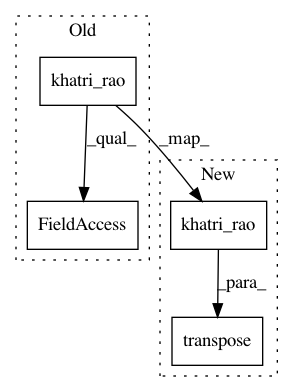

a5bd6a5eb3b78fe02c34de7db53efe253e85ecb9,tensorly/tests/test_kruskal_tensor.py,,test_kruskal_to_tensor,#,12
Before Change
for i in range(len(rows)):
unfolded = unfold(tensor, mode=i)
U_i = matrices.pop(i)
reconstructed = tl.dot(U_i, khatri_rao(matrices).T)
tl.assert_array_almost_equal(reconstructed, unfolded)
matrices.insert(i, U_i)
After Change
for i in range(len(rows)):
unfolded = unfold(tensor, mode=i)
U_i = matrices.pop(i)
reconstructed = tl.dot(U_i, tl.transpose(khatri_rao(matrices)))
tl.assert_array_almost_equal(reconstructed, unfolded)
matrices.insert(i, U_i)
In pattern: SUPERPATTERN
Frequency: 3
Non-data size: 4
Instances
Project Name: tensorly/tensorly
Commit Name: a5bd6a5eb3b78fe02c34de7db53efe253e85ecb9
Time: 2017-09-09
Author: jean.kossaifi@gmail.com
File Name: tensorly/tests/test_kruskal_tensor.py
Class Name:
Method Name: test_kruskal_to_tensor
Project Name: tensorly/tensorly
Commit Name: a5bd6a5eb3b78fe02c34de7db53efe253e85ecb9
Time: 2017-09-09
Author: jean.kossaifi@gmail.com
File Name: tensorly/kruskal_tensor.py
Class Name:
Method Name: kruskal_to_tensor
Project Name: tensorly/tensorly
Commit Name: a5bd6a5eb3b78fe02c34de7db53efe253e85ecb9
Time: 2017-09-09
Author: jean.kossaifi@gmail.com
File Name: tensorly/kruskal_tensor.py
Class Name:
Method Name: kruskal_to_unfolded